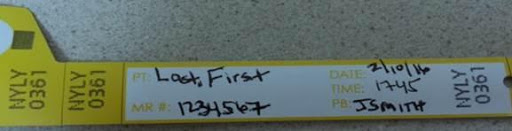

Home
RN Type and Screen Checklist
Apply yellow Fenwal bracelet to patient
ALL type and screens must have PATHNET label and the YELLOW FENWAL sticker on tube
If a fenwal sticker is not available: blood bank armband number/letters may be written on the pathnet label
Scan patient armband
If you cannot scan AT ALL and don’t have a pathnet label, re-band the patient with a new blood bank yellow band.
Apply the handwritten fenwal label to the tube. Verify with 2nd nurse. **Ensure compass username is legible**

Scan lab label
If you cannot get the pathnet label to scan, write your compass ID, time and date on the pathnet label. **Ensure compass username is legible**
Draw specimen
Apply lab label AND Fenwal sticker to tube
Never put a demographic label on a type and screen – only a pathnet label or fenwal label can be on a t&s tube.
Send tube to lab
If you get called for a recollect on a type and screen, you have 2 options:
Reorder to get a new pathnet label – then scan like normal. Lab should cancel it and call you.
Re-band the patient with a new blood bank yellow band. Use the handwritten fenwal label on your tube
Back